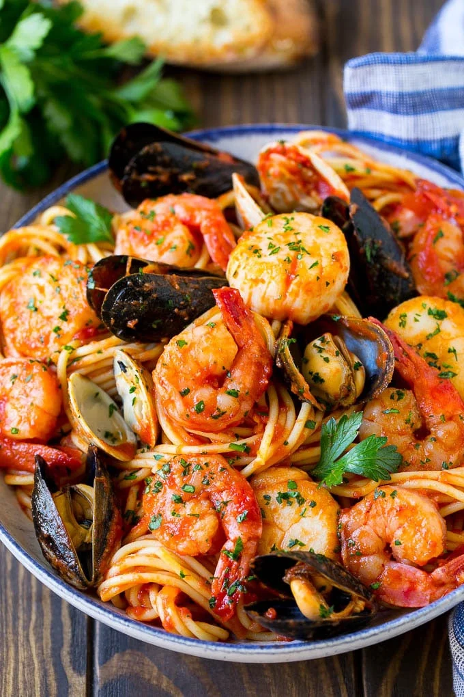

Seafood Pasta

Description
Seafood pasta is a mix of shrimp, calms, squid, and mussles mixed together
with spaghetti in a tomato sauce. An easy to make but perfect for
special occasion!
Ingredients (for two)
- 250ml of tomato sauce
- 160g of spaghetti
- 1/4 onion
- 1 tablespoon of crushed garlic
- 12 prawns
- 12 clams
- 6 mussels
- 1/2 squid, chopped
- white wine (optional)
- olive oil, salt
Steps
- Add 1 tablespoon of sea salt to boiling water in a large pot.
- Cook the spaghetti until soft, then drain water
- Heat 2 tablespoon of olive oil in a large pan over medium heat.
- Add onions and cook 4-5 minutes or until softened.
- Add the garlic and cook for 1 more minute
- Add clams,prawns,mussels, and squid
- Add white wine if available.
- Combine spaghetti with tomato sauce and seafood.
- Cook and toss to coat everything
- Sprinkle with parsley, then serve